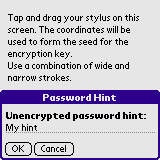

Tapping Load on the edit screen will bring up the Select Template screen. Tap the template to load or tap Cancel to dismiss the dialog without loading a template. If a template is accepted it will replace whatever text is present in the secret.
Tapping Load on the edit screen will bring up the Select Template screen. Tap the template to load or tap Cancel to dismiss the dialog without loading a template. If a template is accepted it will replace whatever text is present in the secret.
iSecur is a Personal Information Manager which lets you store secrets safely. iSecur is the successor of Secure It and provides stronger encryption (SHA256 and AES), icons, intelligent templates and more.
Installation of iSecur is much like installing any other Palm OS program:
When the synchronization is done you will have a 'iSecur' icon in the Main category on your Palm PDA. Feel free to move iSecur to another category.
Note! You only need to install one of the icon files. You should install the HiRes file if your device is capable of displaying 320 x 320 pixels, such as the Tungsten T, TX and others. If not, install the LoRes file - it will work on all Palm OS handhelds (including the Hires devices).
On the first run you will have to form the seed which will make up the encryption key for the database. Please turn off any on-screen writing software you may have. F.ex.:
When the database has been created you can enable the on-screen writing software you previously disabled.
Use a combination of narrow and wide strokes. Also vary the speed of the strokes. The count will countdown from 256.
When the count reaches 1 you will be asked to create a new password. Please enter and confirm your desired password. The 3 little icons in the lower right corner are (from right to left):
Tap the keyboard next to the field to bring up the iSecur Keyboard.
The Password Generator can help you in creating a new password. You can adjust some of the settings of the generated password. Tap:
After creation of the database you will be asked if you would like to enter a Password Hint for the database. F.ex. if you use the name of your wife as password (bad idea) the hint could be set to Name of loved one (even worse). The password hint is NOT encrypted. The hint can be set in the Options -> Password Hint menu.
You must log on to iSecur before you can view any secrets. Enter your password and tap OK. To see what you type tap the little A icon in the lower right corner. To mask what you type tap the little dot icon in the lower right corner.
Tap the keyboard next to the field to bring up the iSecur Keyboard.
If you have forgotten your password you can tap the ? icon. If a password hint has been set it will be shown and hopefully you get an idea of your password.
On the main form you have all your secrets and templates listed ordered by category. To change category select or create the category using the drop down list in the upper right corner. To show only templates, only secrets or both, use the drop down list in the lower right corner. Tapping a secret will show the content. Tapping New creates a new secret. Tapping Load creates a secret loaded from a template (see below).
When a secret is shown, you can use the arrows in the upper right corner to view the entire title of the secret if it is too long to fit on one line. Tap:
In the menu you can turn this secret into a iSecurLet.
If you tap the little lock the body text of the secret will unlock. You can then highlight and copy all or parts of the text (using the menu and stylus). You cannot insert text though - you have to tap Edit to do so.
When tapping New on the main form or Edit when showing a secret you will be able to add, change or delete a secret. Set or change the category using the drop down list in the upper right corner. If this secret is a template then check the Template check box. To set or clear the icon, tap the icon box in the lower right corner. If you have no icon files installed then this box will not be shown! Tap:
If you tap the Password Generator Icon (between the Template checkbox and the Secret Icon) you can generate and insert a password.
In the menu you can turn this secret into a iSecurLet.
Tapping Load on the edit screen will bring up the Select Template screen. Tap the template to load or tap Cancel to dismiss the dialog without loading a template. If a template is accepted it will replace whatever text is present in the secret.
Template might carry keywords for you to enter. You may enter as many keywords as you like. Tap:
If you tap the Password Generator Icon you can generate and insert a password.
If the receiving secret already has some text you will be asked what to do with the text from the template. Note! The title will always be replaced.
If you have one or more DateBk5 compatible icons installed you can use them from within iSecur. The standard distribution comes with two sets of icon files:
Internally, the name should be iSecur Icons. If you install both of the icon files from the standard distribution the file installed last will overwrite the file installed first.
The icons in the standard distribution are kindly donated by Leslie Franke.
The icon selector is accessed by tapping the icon button on the edit screen. Select the icon to use or tap the No Icon button to clear the icon for the secret.
More on templates ... Templates can be divided into two groups:
To create a template tap New on the main form. Enter the template title and text. Set a icon if needed. Remember to check the Template check box and then tap OK. You have now created a template which can be loaded using the Load button on the edit form.
To really harness the power of templates you can use keywords. A keyword is a word or a phrase in square brackets: [keyword or phrase]. When loading the template the user will be asked to enter replacement values for the keyword which will then be used when loading the template. Here's an example. On the template on the left two keywords have been created: [keyword] and [another]. The Template checkbox has been checked to indicate that this is a template. Secure It users: please note that the old template editor is gone.
On the main screen our template is shown in bold. Tap New to create a new secret, then tap Load to bring up the template selector and then select the newly create template (A Template).
The template will ask you to fill in replacement values for keyword and another. Do so and tap OK.
The values entered on the Enter Keywords form are then used in the new secret.
To set a keyword to a fixed value use the following:
[keyword=value]
Commands. A command is a simple macro which will expand to some predefined value or ask for external input:
[keyword=@command[ arguments]]
The following commands have been defined:
Examples:
[password=@password 10 Ud]
[password=@password SL 7]
[password=@password]
The first creates a password of 10 characters consisting of uppercase characters and digits. The second creates a password of 7 characters consisting of special characters and lowercase characters. The third creates a password using the default settings: 8 LUD.
iSecurLets are small pointers into the iSecur Database. The idea is to create a shortcut to often used secrets. F.ex. if you store your MasterCard data in iSecur and then create an iSecurLet while showing/editing the MasterCard data you will place a icon in your launcher pointing to the MasterCard entry. Tapping on the launcher icon will launch iSecur showing the MasterCard entry - you will be asked to enter a password before the data is shown. Dismissing the MasterCard iSecurLet will drop you into the launcher again.
Select the Create iSecurLet menu item when showing or editing a secret. Enter a name, tap OK and iSecur will create a icon in your launcher pointing to the current secret.
On the main screen select the Manage iSecurLets menu item to launch the iSecurLet manager. Tap on a entry to edit the iSecurLet. Tap Prune to remove iSecurLets which points to non-existing secrets. Tap Done when ... done.
iSecur can export secrets and templates to Memo and import memos as secrets or templates from Memo.
Select the Memos to import. Tap the All button to select all Memos in this category and tap the None button to de-select all Memos in this category. Tap Import to import the selected Memos. Tap Done when ... done.
Select the iSecur category to import to. if Delete after import is checked the imported Memos will be deleted from Memo. If Import as templates is checked all imported Memos will be treated as templates. You can optionally set an Icon which all the imported items will share. Tap Import to start import of Memos.
Select the secrets and templates to export. Tap the All button to select all secrets and templates in this category and tap the None button to de-select all secrets and templates in this category. Tap Export to export the selected secrets and templates. Tap Done when ... done.
 Select the Memo category to export to. if Delete after export is checked the exported secrets and templates will be deleted from iSecur. Tap Export to start export of secrets and templates.
Select the Memo category to export to. if Delete after export is checked the exported secrets and templates will be deleted from iSecur. Tap Export to start export of secrets and templates.
The iSecur Keyboard is a simple numeric keyboard. The keys are large so that you can use your thumbs.
There are 16 keys. These are (from left to right, top to bottom):
You can change the layout by pressing the key next to 0. The layout will switch between calculator layout and phone layout.
You can enter other characters using Graffiti or by bringing up the system keyboard.
The behaviour of iSecur can be changed to your likings in many ways. Select the Preferences menu item on the main screen to open the Preferences dialog. Select the preferences section using the drop down list in the upper right corner. On the Password Policy screen you can change: